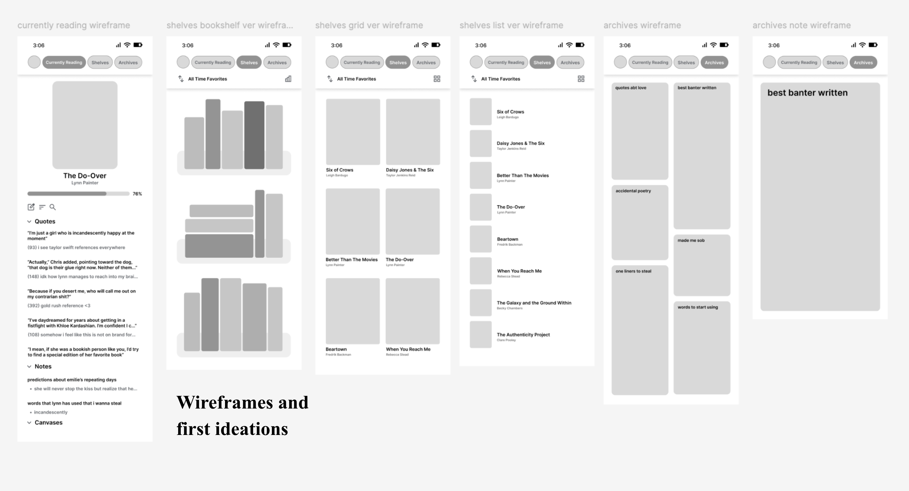
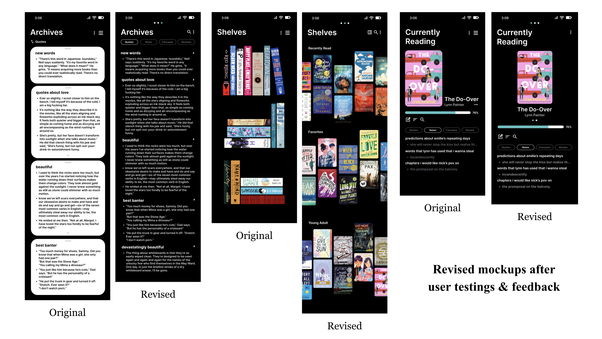

As an avid reader, I sought to create an app design to keep a fully customizable record of all things book related and provide a space of readers to collect their ideas and favorite pieces of literature. The Reading Journal is a UI/UX design project made through Figma for an app design that allows readers to collect quotes, notes, photographs, reviews, and ratings in a customizable and integrative database. For this project, I completed user research, wireframing, and iterations based on feedback. Through the app, users would be able to organize books into custom shelves, compile quotes and notes from various books into collections, and have a space to store all related materials.

